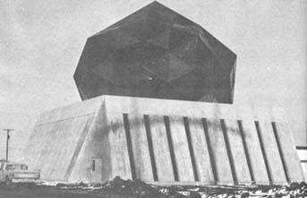

The Atomic Energy Commission's National Accelerator Laboratory (of all places) has come up with an idea that might make it a little easier for you to have that strong but cheap and easy-to-build cabin or shed of your dreams. Robert Sheldon, an AEC engineer, was put about the task of finding a lightweight, translucent panel to use in the construction of a new laboratory. After seeing a gag sign that said, "Keep America beautiful-swallow a beer can," Sheldon decided to put together a sandwich worthy of Dagwood Bumstead's best efforts, beer cans on fiberglass, heavy on the glue.
A 10'3" equilateral triangle of 100-mil-thick polyester-bonded fiberglass was roughened with an abrasive, spread with epoxy resin adhesive and covered with about 530 discarded aluminum beverage cans stood on end. The tops and bottoms had been removed from the containers so that light could pass through the finished panels. A second adhesive-backed triangle was then placed on top of the cans, weights were set on the sandwich and it was left to dry overnight. Next day the edges of the panel were bound with U-shaped aluminum channeling to prevent peeling of the fiberglass away from the cans. The red, blue, orange and yellow honeycomb-like units built in this fashion were then put together into a multi-colored geodesic dome, 40 feet high and 200 feet in circumference.
News of the idea spread rapidly, and soon some engineering students at The University of Akron in Akron, Ohio were building and testing more beer can panels. Rumor has it the ultimate goal is flooring the Professor Joseph Lestingi's new patio, but presently the project is part of classes taught by another professor, Robert Dubensky. So far the students have limited themselves to fiberglass-epoxy construction similar to NAL's, using varying thicknesses of sheeting to build arched panels that would be suitable for roofing, footbridges and the like. Their first arch, made from 40-mil fiberglass, withstood a center load of 2,450 pounds before buckling.
The biggest expense in constructing the beer can panels is the glue used to bond each unit. Epoxy rapidly runs into money. At the suggestion of Mother Earth News, the Akron crew will soon build test panels of plywood bonded with Weldwood and other lower cost glues in an attempt to find the most economical materials combination.
The aluminum channels affixed to the edges of the triangular sandwiches used on the NAL dome are also quite expensive but very important, they both prevent peeling and, especially in the case of arch construction, help distribute load forces throughout a panel. The Akron students have already found that wood will do the same job for less dollars in at least some cases.
A full report on beer can construction panels, including test results on strength and insulating capacity, detailed construction plans and tips on cutting costs, is coming up soon in Mother Earth News. We think the units should prove to be light, strong, self-insulating to an extent, easy to build and relatively inexpensive, just the thing for getting started on the homestead or cutting corners in the suburbs. A good recycling idea, too!
|
 |
|
|